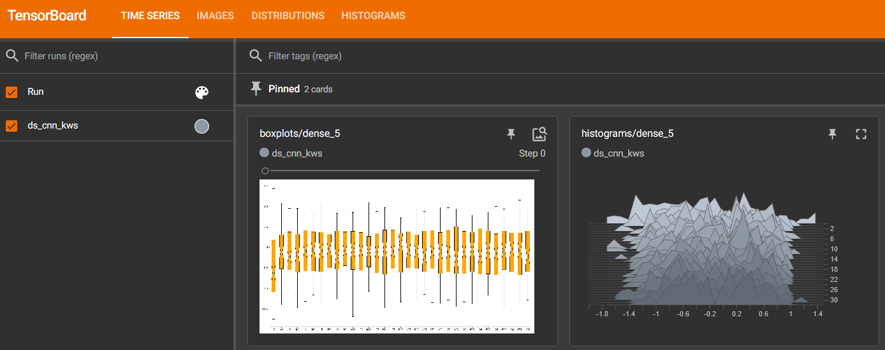

QuantizeML toolkit
Overview
QuantizeML package provides base layers and quantization tools for deep-learning models. It allows the quantization of CNN models using low-bitwidth weights and outputs. Once quantized with the provided tools, CNN2SNN toolkit will be able to convert the model and execute it with Akida runtime.
The FixedPoint representation
QuantizeML uses a FixedPoint representation in place of float values for layers inputs, outputs and weights.
FixedPoint numbers are actually integers with a static number of fractional bits so that:
The precision of the representation is directly related to the number of fractional bits. For example, representing PI using an 8-bit FixedPoint with varying fractional bits:
frac_bits |
x_int |
float value |
|---|---|---|
1 |
6 |
3.0 |
3 |
25 |
3.125 |
6 |
201 |
3.140625 |
Further details are available in the FixedPoint API documentation.
Thanks to the FixedPoint representation, all operations within layers are implemented as integer only operations [1].
Quantization flow
The first step in the workflow is to train a model. The trained model is the starting point for the quantization stage. Once it is established that the overall model configuration prior to quantization yields a satisfactory performance on the task, one can proceed with quantization.
Note
For simplicity, the following leverages the TF-Keras API to define a model, but QuantizeML also comes with ONNX support, see the PyTorch to Akida or off-the-shelf models examples for more information.
Lets take the DS-CNN model from our zoo that targets KWS task as an example:
from akida_models import fetch_file
from quantizeml import load_model
model_file = fetch_file("https://data.brainchip.com/models/AkidaV2/ds_cnn/ds_cnn_kws.h5",
fname="ds_cnn_kws.h5")
model = load_model(model_file)
The QuantizeML toolkit offers a turnkey solution to quantize a model: the quantize function. It replaces the TF-Keras layers (or custom QuantizeML layers) with quantized, integer only layers. The obtained quantized model is still a TF-Keras model that can be evaluated with a standard TF-Keras pipeline.
The quantization scheme used by quantize can be configured using QuantizationParams. If none is given, an 8-bit configuration scheme will be selected.
Heres an example for 8-bit quantization:
from quantizeml.models import QuantizationParams
qparams8 = QuantizationParams(input_weight_bits=8, weight_bits=8, activation_bits=8)
Heres an example for 4-bit quantization (with first layer weights set to 8-bit):
from quantizeml.models import QuantizationParams
qparams4 = QuantizationParams(input_weight_bits=8, weight_bits=4, activation_bits=4)
Note that quantizating the first weights to 8-bit helps preserving accuracy.
QuantizeML uses a uniform quantization scheme centered on zero. During quantization, the floating point values are mapped to a given bitwidth quantization space of the form:
scales is a real number used to map the FixedPoint numbers to a quantization space. It is calculated as follows:
Inputs, weights and outputs scales are folded into a single output scale vector.
To avoid saturation in downstream operations throughout a model graph, the bitwidth of intermediary results is decreased using OutputQuantizer. The quantize function has built-in rules to automatically isolate building blocks of layers after which such quantization is required and will insert the OutputQuantizer objects during the quantization process.
To properly operate, an OutputQuantizer must be calibrated so that it determines an adequate quantization range. Calibration will determine the quantization range statistically. It is possible to pass down samples to the quantize function so that calibration and quantization are performed simultaneously.
Calibration samples are available on Brainchip data server for datasets used in our zoo. They must be downloaded and deserialized before being used for calibration.
import numpy as np
from akida_models import fetch_file
samples = fetch_file("https://data.brainchip.com/dataset-mirror/samples/kws/kws_batch1024.npz",
fname="kws_batch1024.npz")
samples = np.load(samples)
samples = np.concatenate([samples[item] for item in samples.files])
Quantizing the DS-CNN model to 8-bit is then done with:
from quantizeml.models import quantize
quantized_model = quantize(model, qparams=qparams8, samples=samples)
Please refer to calibrate for more details on calibration.
Direct quantization of a standard TF-Keras model (also called Post Training Quantization, PTQ) generally introduces a drop in performance. This drop is usually small for 8-bit or even 4-bit quantization of simple models, but it can be very significant for low quantization bitwidth and complex models (AkidaNet architecture).
If the quantized model offers acceptable performance, it can be directly converted into an Akida model (see the convert function).
However, if the performance drop is too high, a Quantization Aware Training (QAT) step is required to recover the performance prior to quantization. Since the quantized model is a TF-Keras model, it can then be trained using the standard TF-Keras API.
Check out the examples section for tutorials on quantization, PTQ and QAT.
Compatibility constraints
The tookit supports a wide range of layers (see the supported type section). When hitting a non-compatible layer, QuantizeML will simply stop the quantization before this layer and add a Dequantizer before it so that inference is still possible. When such an event occurs, a warning is raised to the user with the faulty layer name.
While quantization comes with some restrictions on layer order (e.g. MaxPool2D operation should be placed before ReLU activation), the sanitize helper is called before quantization to deal with such restrictions and edit the model accordingly. sanitize will also handle some layers that are not in the supported layer types such as:
ZeroPadding2D which is replaced with same padding convolution when possible
- Lambda layers:
Lambda(relu) or Activation(relu) ReLU,
Lambda(transpose) Permute,
Lambda(reshape) Reshape,
Lambda(add) Add.
Model loading
The toolkit offers a helper that allows to load float and quantized models from TF-Keras or ONNX frameworks: quantizeml.load_model.
Command line interface
In addition to the programming interface, QuantizeML toolkit also provides a command-line interface to perform quantization, dump a quantized model configuration, check a quantized model and insert a rescaling layer.
quantize CLI
Quantizing a model through the CLI uses almost the same arguments as the programming interface but the quantization parameters are split into the parameters: input weight quantization with -i, weight bitwidth with -w and activation bitwidth with the -a options.
quantizeml quantize -m model_keras.h5 -i 8 -w 8 -a 8
Note that without calibration options explicitly given, calibration will happen with 1024 randomly generated samples. It is generally advised to use real samples serialized in a numpy .npz file.
quantizeml quantize -m model_keras.h5 -i 8 -w 8 -a 8 -sa some_samples.npz -bs 128 -e 2
For akida 1.0 compatibility, it is mandatory to have activations quantized per-tensor instead of the default per-axis quantization:
quantizeml quantize -m model_keras.h5 -i 8 -w 4 -a 4 --per_tensor_activations
Note
The quantize CLI is the same for Keras and ONNX models.
config CLI
Advanced users might want to customize the default quantization pattern and this is made possible by dumping a quantized model configuration to a .json file and quantizing again using the -c option.
quantizeml config -m model_keras_i8_w8_a8.h5 -o config.json
... manual configuration changes ...
quantizeml quantize -m model_keras.h5 -c config.json
Warning
Editing a model configuration can be complicated and might have negative effects on quantized accuracy or even model graph. This should be reserved to users deeply familiar with QuantizeML concepts.
Note
This is only available for TF-Keras models.
check CLI
It is possible to check for quantization errors using the check CLI that will report inaccurate weight scales quantization or saturation in integer operations.
quantizeml check -m model_keras_i8_w8_a8.h5
Note
This is only available for TF-Keras models.
insert_rescaling CLI
Some models might not include a Rescaling layer in their architecture and have a separated preprocessing pipeline (ie. moving from [0, 255] images to a [-1, 1] normalized representation). As having a rescaling layer might be useful, QuantizeML offers the insert_rescaling CLI that will add a Rescaling layer at the beginning of a given model.
quantizeml insert_rescaling -m model_keras.h5 -s 0.007843 -o -1 -d model_updated.h5
where \(0.007843 = 1/127.5\).
Note
This is only available for TF-Keras models.
Supported layer types
TF-Keras support
The QuantizeML toolkit provides quantization of the following layer types which are standard TF-Keras layers for most part and custom QuantizeML layers for some of them:
- Neural layers
DepthwiseConv2DTranspose (custom QuantizeML layer)
BufferTempConv (custom QuantizeML layer)
DepthwiseBufferTempConv (custom QuantizeML layer)
- Skip connections
- Activations
ReLU (both unbounded and with a max value)
GeLU, SiLU(Swish), HardSiLU, LeakyReLU and PReLU (with a fixed slope) through QuantizedActivation (custom QuantizeML layer)
- Pooling
ONNX support
The QuantizeML toolkit will identify groups of ONNX operations, or patterns and quantize towards:
QuantizedConv2D when the pattern is:
<Conv, Activation, GlobalAveragePool>
<Conv, MaxPool, Relu/Clip>
<Conv, GlobalAveragePool>
<Conv, Activation>
<Conv>
QuantizedDepthwise2D when the pattern is:
<Conv, Activation>
<Conv>
and groups=input_channels.
QuantizedConv2DTranspose when the pattern is:
<ConvTranspose, Activation>
<ConvTranspose>
QuantizedDepthwise2DTranspose when the pattern is:
<ConvTranspose, Activation>
<ConvTranspose>
and groups=input_channels.
QuantizedBufferTempConv when the pattern is:
<BufferTempConv, Relu>
<BufferTempConv>
QuantizedDepthwiseBufferTempConv when the pattern is:
<DepthwiseBufferTempConv, Relu>
<DepthwiseBufferTempConv>
QuantizedDense1D when the pattern is:
<Flatten, Gemm, Relu/Clip>
<Flatten, Gemm>
<Gemm, Relu/Clip>
<Gemm>
QuantizedAdd when the pattern is:
<Add, Relu>
<Add>
QuantizedConcat when the pattern is:
<Concat>
While Akida directly supports the most important models, it is not feasible to support all possibilities. There might occasionally be models which are nearly compatible with Akida but which will fail to quantize due to just a few incompatibilities. The custom pattern feature allows to handle such models as illustrated in the dedicated advanced example.
Analysis module
The QuantizeML toolit comes with an analysis submodule that provides tools to better analyze the impact of quantization on a model. Quantization errors and minimal accuracy drops are an expected behavior going from float to integer (8-bits). While no simple and generic solution can be provided to solve larger accuracy issues, the analyis tool can help pinpoint faulty layers or kernels that might be poorly quantized and thus harm accuracy. Once the culprit is found, adding regularization or training constraints can help tackle the issue, quantizing per-tensor or per-axis can also help.
Note
analysis is shipped as an optional submodule and might not be installed by default. To install it, use:
pip install quantizeml[analysis]
Kernel distribution
This tool leverages the Tensorboard visualization toolkit to draw the kernel distributions of a given model. The plot_kernel_distribution API takes as inputs the model of interest and a path to save a preset Tensorboard configuration to display. The following command line will enable the histogram and boxplot displays:
tensorboard --logdir=`logdir`
Since QuantizeML is based on a uniform quantization scheme centered on zero, the kernel distribution tool can be used to check for large outliers or oddly distributed kernels that might be poorly quantized.
Example output for the classification layer of the DS-CNN/KWS model:
{kind=link}
Quantization error
The tool offers 2 possible ways to check quantization error in a model:
for all layers: a quantization error is computed on each layer output
for a single layer: per-channel error is then reported
This is accessible using the measure_layer_quantization_error API. The quantization error is then computed independently for each layer or channel accordingly. The cumulative error, that is the error propagated from the input to each layer, is computed with the measure_cumulative_quantization_error dedicated API. Both APIs will return a python dictionary containing the metrics that can be displayed using the print_metric_table function.
A batch_size parameter is present in the quantization error functions and can be used to better refine the computed error by averaging error on more data.
It is also possible to compute weight quantization error (model or layer wise) using the measure_weight_quantization_error helper.
Metrics
The quantization error tools will report SMAPE and saturation metrics.
The symmetric mean absolute percentage error (SMAPE) measures error as:
The saturation metric is the percentage of saturated values for a given layer or channel. A value is saturated when it is equal to the minimum or maximum value allowed by a given bitwidth.
Command line
The analysis tools are accessible via command-line using the analysis action:
quantizeml analysis -h
usage: quantizeml analysis [-h] {kernel_distribution,quantization_error} ...
positional arguments:
{kernel_distribution,quantization_error}
kernel_distribution Plot kernel distribution
quantization_error Measure quantization error
options:
-h, --help Show this help message and exit
Note
The sections below use the DS-CNN/KWS model for illustration purposes, but this model does not exhibit quantization issues.
Kernel distribution from command-line
A model and a directory must be provided:
quantizeml analysis kernel_distribution -h
usage: quantizeml analysis kernel_distribution [-h] -m MODEL -l LOGDIR
options:
-h, --help Show this help message and exit
-m MODEL, --model MODEL Model to analyze
-l LOGDIR, --logdir LOGDIR Log directory to save plots
Tensorboard called on the log directory:
quantizeml analysis kernel_distribution -m ds_cnn_kws.h5 -l .\logs
tensorboard --logdir=.\logs
Quantization error from command-line
All the options described in the previous section are accessible through parameters:
usage: quantizeml analysis quantization_error [-h] -m MODEL -qm QUANTIZED_MODEL [-tl TARGET_LAYER] [-bs BATCH_SIZE] [-c]
options:
-h, --help Show this help message and exit
-m MODEL, --model MODEL Model to analyze
-qm QUANTIZED_MODEL, --quantized_model QUANTIZED_MODEL The quantized model to analyze
-tl TARGET_LAYER, --target_layer TARGET_LAYER Compute per_channel error for a specific
layer/node. Defaults to None
-bs BATCH_SIZE, --batch_size BATCH_SIZE Batch size to generate samples. Defaults
to 16
-c, --cumulative Compute cumulative quantization error
instead of isolated one. Defaults to
False
Providing only a model and its quantized version will print out quantization error per-layer individually:
quantizeml analysis quantization_error -m ds_cnn_kws.h5 -qm ds_cnn_kws_i8_w8_a8.h5
Quantization error for ds_cnn_kws:
=====================================================================================
Layer/node | SMAPE | Saturation (%)
=====================================================================================
conv_0 (QuantizedConv2D) | 0.0182 | 0.0000
conv_0/relu (QuantizedReLU) | 0.0054 | 5.3266
dw_separable_1 (QuantizedDepthwiseConv2D) | 0.0623 | 0.5328
pw_separable_1 (QuantizedConv2D) | 0.0138 | 0.0000
pw_separable_1/relu (QuantizedReLU) | 0.0042 | 7.5719
dw_separable_2 (QuantizedDepthwiseConv2D) | 0.0277 | 2.1156
pw_separable_2 (QuantizedConv2D) | 0.0140 | 0.0000
pw_separable_2/relu (QuantizedReLU) | 0.0050 | 2.6492
dw_separable_3 (QuantizedDepthwiseConv2D) | 0.0330 | 0.3859
pw_separable_3 (QuantizedConv2D) | 0.0162 | 0.0000
pw_separable_3/relu (QuantizedReLU) | 0.0062 | 0.3547
dw_separable_4 (QuantizedDepthwiseConv2D) | 0.0570 | 0.0445
pw_separable_4 (QuantizedConv2D) | 0.0194 | 0.0000
pw_separable_4/relu (QuantizedReLU) | 0.0001 | 0.0000
pw_separable_4/global_avg (QuantizedGlobalAveragePooling2D) | 0.0041 | 1.1719
dense_5 (QuantizedDense) | 0.0078 | 0.0000
=====================================================================================
Using the cumulative option will display a similar report where error is cumulated top-down from layer to layer:
quantizeml analysis quantization_error -m ds_cnn_kws.h5 -qm ds_cnn_kws_i8_w8_a8.h5 -c
Quantization error for ds_cnn_kws:
=====================================================================================
Layer/node | SMAPE | Saturation (%)
=====================================================================================
conv_0 (QuantizedConv2D) | 0.0180 | 0.0000
conv_0/relu (QuantizedReLU) | 0.0106 | 5.1937
dw_separable_1 (QuantizedDepthwiseConv2D) | 0.1053 | 0.5594
pw_separable_1 (QuantizedConv2D) | 0.1862 | 0.0000
pw_separable_1/relu (QuantizedReLU) | 0.1121 | 7.7031
dw_separable_2 (QuantizedDepthwiseConv2D) | 0.2173 | 2.1727
pw_separable_2 (QuantizedConv2D) | 0.2353 | 0.0000
pw_separable_2/relu (QuantizedReLU) | 0.1344 | 2.6430
dw_separable_3 (QuantizedDepthwiseConv2D) | 0.2131 | 0.3906
pw_separable_3 (QuantizedConv2D) | 0.2515 | 0.0000
pw_separable_3/relu (QuantizedReLU) | 0.1335 | 0.3875
dw_separable_4 (QuantizedDepthwiseConv2D) | 0.2528 | 0.0695
pw_separable_4 (QuantizedConv2D) | 0.3366 | 0.0000
pw_separable_4/relu (QuantizedReLU) | 0.2310 | 0.0000
pw_separable_4/global_avg (QuantizedGlobalAveragePooling2D) | 0.0860 | 1.5625
dense_5 (QuantizedDense) | 0.0962 | 0.0000
=====================================================================================
The target_layer allows to focus on a given layer and display a per-axis error on all output channels for this layer, for example on the classification dense layer:
quantizeml analysis quantization_error -m ds_cnn_kws.h5 -qm ds_cnn_kws_i8_w8_a8.h5 -tl dense_5
Quantization error for ds_cnn_kws:
=====================================================
Layer/node | SMAPE | Saturation (%)
=====================================================
dense_5 (QuantizedDense):1 | 0.0011 | 0.0000
dense_5 (QuantizedDense):2 | 0.0003 | 0.0000
dense_5 (QuantizedDense):3 | 0.0002 | 0.0000
dense_5 (QuantizedDense):4 | 0.0032 | 0.0000
dense_5 (QuantizedDense):5 | 0.0190 | 0.0000
dense_5 (QuantizedDense):6 | 0.0005 | 0.0000
dense_5 (QuantizedDense):7 | 0.0025 | 0.0000
dense_5 (QuantizedDense):8 | 0.0053 | 0.0000
dense_5 (QuantizedDense):9 | 0.0005 | 0.0000
dense_5 (QuantizedDense):10 | 0.0018 | 0.0000
dense_5 (QuantizedDense):11 | 0.0041 | 0.0000
dense_5 (QuantizedDense):12 | 0.0004 | 0.0000
dense_5 (QuantizedDense):13 | 0.0009 | 0.0000
dense_5 (QuantizedDense):14 | 0.0019 | 0.0000
dense_5 (QuantizedDense):15 | 0.0006 | 0.0000
dense_5 (QuantizedDense):16 | 0.0039 | 0.0000
dense_5 (QuantizedDense):17 | 0.0018 | 0.0000
dense_5 (QuantizedDense):18 | 0.0090 | 0.0000
dense_5 (QuantizedDense):19 | 0.0057 | 0.0000
dense_5 (QuantizedDense):20 | 0.0007 | 0.0000
dense_5 (QuantizedDense):21 | 0.0005 | 0.0000
dense_5 (QuantizedDense):22 | 0.0012 | 0.0000
dense_5 (QuantizedDense):23 | 0.0005 | 0.0000
dense_5 (QuantizedDense):24 | 0.0039 | 0.0000
dense_5 (QuantizedDense):25 | 0.0627 | 0.0000
dense_5 (QuantizedDense):26 | 0.0030 | 0.0000
dense_5 (QuantizedDense):27 | 0.0005 | 0.0000
dense_5 (QuantizedDense):28 | 0.0016 | 0.0000
dense_5 (QuantizedDense):29 | 0.0026 | 0.0000
dense_5 (QuantizedDense):30 | 0.0004 | 0.0000
dense_5 (QuantizedDense):31 | 0.0005 | 0.0000
dense_5 (QuantizedDense):32 | 0.0005 | 0.0000
dense_5 (QuantizedDense):33 | 0.0010 | 0.0000
=====================================================
Note
Since random samples are used, results in the above tables may slightly change.